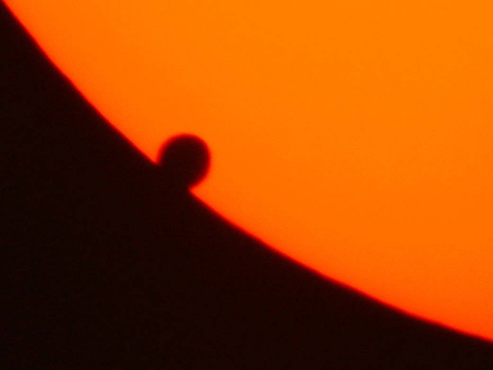

08 · 06 · 2004
Em 8 de junho de 2004, aconteceu algo extraordinariamente raro:
Vênus passou diante do Sol. Ao fazer isso, esse planeta nos permite
conhecer a distância que existe entre a nossa Terra e a nossa estrela.
Nesse mesmo dia, nasceu o meu próprio Vênus: alguém que me ensinaria
a medir a luz de outra maneira e que traria ao meu mundo muito mais
brilho do que eu jamais poderia imaginar.
✦